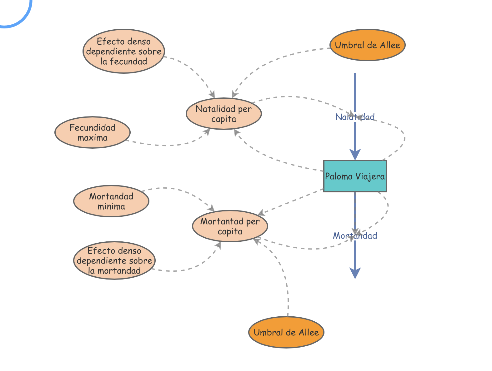

Paloma viajera/Allee effect
BIOL4558
Agosto 2022
colorize <- function(x, color) {
if (knitr::is_latex_output()) {
sprintf("\\textcolor{%s}{%s}", color, x)
} else if (knitr::is_html_output()) {
sprintf("<span style='color: %s;'>%s</span>", color,
x)
} else x
}El efecto Allee

¿Qué sucede si la dependencia de la densidad va al revés? ¿Qué pasa si una disminución en la densidad cambia las tasas vitales para producir una disminución en la tasa de crecimiento de la población r ?
Imagínese una especie muy social, como los perros de la pradera. Si la densidad es alta, pueden advertirse entre sí sobre los depredadores. Si la densidad es baja, la tasa de depredación podría aumentar, lo que resultaría en un d más alto. Esta es una retroalimentación positiva y puede resultar en, bueno, ¡deberías simularla por ti mismo! Pero recuerde, las retroalimentaciones positivas generalmente resultan en sistemas inestables o no regulados.
Este efecto, por el cual la tasa de crecimiento de la población puede disminuir cuando el tamaño de la población disminuye, se denomina efecto Allee , y lleva el nombre del ecólogo Warder Clyde Allee (1885-1955). Allee se especializó en comportamiento social y agregaciones, y reconoció los beneficios de las agregaciones sociales para la aptitud individual.
Curiosamente, el interés de Allee en la cooperación y los beneficios de las agregaciones sociales se extendieron a su vida de otras maneras. ¡Era un devoto “Quaker”/cuáquero, un activista contra la guerra y un defensor de la cooperación social en los seres humanos! Del artículo de Wikipedia: “Allee veía a los ecologistas como ‘social healers/curanderos sociales’ que podían proporcionar una base naturalista para la ética a través de su investigación”.

Uno de los ejemplos más famosos de un posible efecto Allee involucra a la paloma viajera (Ectopistes migratorius).

La passenger pigeon fue una de las aves más abundantes de América del Norte. ¡Algunos estiman que la abundancia total de especies puede haber sido de más de tres mil millones a la vez!
Aldo Leopold dijo una vez:
“Aún viven hombres que, en su juventud, recuerdan a las palomas; aún viven árboles que, en su juventud, fueron sacudidos por un viento vivo. Pero dentro de algunas décadas solo los robles más viejos lo recordarán, y por fin solo los cerros sabrán .” —Aldo Leopold, “En un monumento a la paloma”, 1947.
“Men still live who, in their youth, remember pigeons; trees still live who, in their youth, were shaken by a living wind. But a few decades hence only the oldest oaks will remember, and at long last only the hills will know.” —Aldo Leopold, “On a Monument to the Pigeon”, 1947.
¿Qué pasó con la paloma migratoria? Bueno, en primer lugar, las palomas fueron cazadas a gran escala utilizando métodos derrochadores.

En segundo lugar, los bosques frondosos/“hardwood forest” , (la principal fuente de alimento para las palomas era las semillas de los árboles de los bosques frondosas) se talaron a gran escala, reduciendo el hábitat.
Pero, ¿qué tienen que ver las palomas migratorias con el efecto Allee?
- Bueno, eran una especie extremadamente gregaria. Una vez que su número disminuyó (debido a la caza y la tala), sus sistemas sociales se derrumbaron y ya no pudieron reproducirse ni evitar a los depredadores de manera efectiva.
Ejercicio en clase: efecto Allee
En este ejercicio exploraremos las implicaciones de la dependencia de densidad positiva en las tasas vitales.
- En InsightMaker, cargue el modelo logístico con tasas vitales, es decir, donde \(b\) y \(d\) dependen de la densidad del modelo. Debería verse algo como esto (o si aún no lo tiene, clónelo desde aquí):

Ahora agregue una nueva constante ([Variable] en InsightMaker) llamada Umbral de Allee . Establezca esta constante en 200.
En cuanto a los demás parámetros, configúrelos de la siguiente manera:
- Abundancia inicial: 201 (justo por encima del umbral de Allee)
- Dependencia de la densidad de la tasa de natalidad: 0,004
- Dependencia de la densidad de la mortalidad: 0,001
- Tasa de natalidad máxima: 0,8
- Mortalidad mínima: 0.3
Ahora usemos una sentencia Condicional (SI-ENTONCES-ELSE) para especificar un efecto Allee. La población experimenta una tasa de crecimiento máxima en el umbral de Allee. Si la población está por encima del umbral de Allee, la población exhibe (estabilizando) una dependencia de densidad negativa. Si la población está por debajo del umbral de Allee, entonces la población experimenta una dependencia de densidad positiva, por lo que los individuos de poblaciones más pequeñas tienen una aptitud general menor .
Para hacer esto, defina su Nacimientos per cápita usando la siguiente sintaxis:
De manera similar, defina sus * Muertes per cápita * utilizando la siguiente sintaxis:
Si nos estamos quedando sin tiempo en clase (¡lo cual probablemente lo estaremos!), Cargue el modelo (¡y clónelo!) Usando este enlace!
here):

1. In InsightMaker, load up the logistic model with vital rates – that is, where \(b\) and \(d\) are each modeled density-dependent. It should look something like this, or if you do not already have this, clone it from
2. Now add a new constant ([Variable] in InsightMaker) called Allee threshold. Set this constant equal to 200.
3. As for the other parameters, set them as follows:
- Initial abundance: 201 (just above the
Allee threshold)
- Density dependence on birth rate:
0.004
- Density dependence on mortality: 0.001
- Max birth rate: 0.8
- Min mortality: 0.3
4. Now let’s use a Conditional (IF-THEN-ELSE) statement to specify an Allee effect. The population experiences maximum growth rate at the Allee threshold. If the population is above the Allee threshold, the population exhibits (stabilizing) negative density dependence. If the population is below the Allee threshold, then the population experiences positive density dependence- whereby individuals in smaller populations have lower overall fitness.
5. To do this, define your Births per Capita using the following syntax:.
6. Similarly, define your Deaths per capita using the following syntax:.
If [Pigeons]<[Allee threshold] Then
[Max fecundity]-[Density dependence on fecundity]*([Allee threshold]-[Pigeons])
Else
[Max fecundity]-[Density dependence on fecundity]*([Pigeons]-[Allee threshold])
End If7. If we are running out of time in class (which we probably will be!), load the model (and clone it!) using this link!.
Ahora puede intentar responder las siguientes preguntas:
Q: ¿Cuál es la capacidad de carga (K) de esta población?
Q: ¿La capacidad de carga (K) representa un punto de equilibrio en este modelo? - Trate de encontrar otro punto de equilibrio, es decir, un punto donde la población no crece ni declina.
Q:¿Es este equilibrio un equilibrio estable o un equilibrio inestable?
Q: Traza las tasas de natalidad y mortalidad en función de la densidad en este modelo, ¿puede identificar los dos equilibrios?
Q: ¿Por qué los efectos Allee a menudo significan malas noticias para la conservación de la vida silvestre?
Q: Haz una pequeña busqueda de literatura para averiguar cual otra especie pudiese tener un efecto ALLEE - Busca información sobre 2 especies en la literatura que tienen o potencialmente tienen un efecto ALLEE. - Escribe de 7-10 lineas con referencias sobre lo que encuentra - Los dos mejores trabajos serán añadido al website (Esta pagina)
Para ver expandir su conocimiento the passenger pigeon and its possible “de-extinction”
Q: ¿Apoya los esfuerzos de Revive and Restore para recuperar la paloma migratoria? ¿Por qué o por qué no?